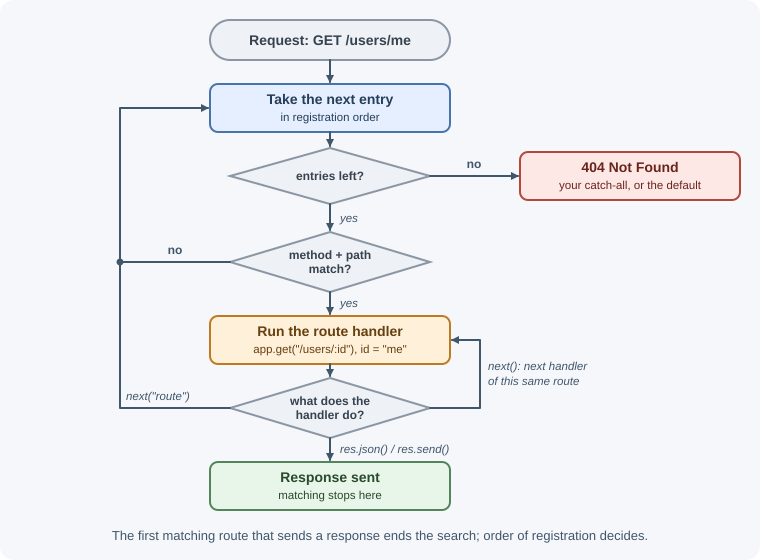
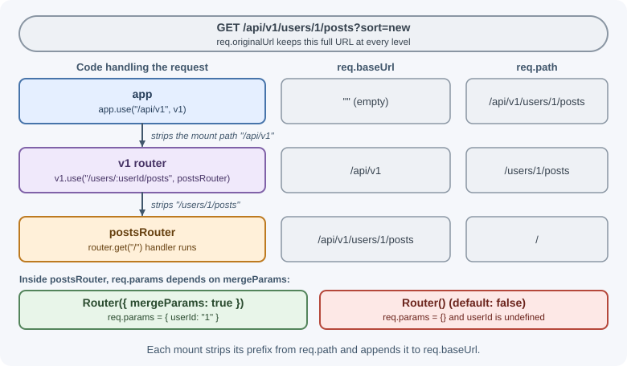

Routing and Routers¶
Routing decides which code runs for a request. In Express, a route is an
HTTP method plus a path pattern plus one or more handler functions. Routers
let you group related routes into modules and mount them under a common
prefix such as /api/v1/users.
Why it matters¶
An API is a set of routes. Clear routing makes the API predictable for clients and the code easy to navigate for developers. Mistakes in routing are common sources of bugs: a route registered in the wrong order can swallow requests meant for another, a missing 404 handler leaves clients with confusing responses, and an unexpected path syntax error can stop the server from starting.
Real-world usage¶
Public APIs show the routing decisions this lesson covers: resource paths, nesting, and where the version lives.
- Stripe describes its API as having "predictable resource-oriented
URLs", all under a
/v1prefix such ashttps://api.stripe.com/v1/charges. The exact behavior version is chosen separately with aStripe-Versionrequest header, so the URL prefix rarely changes (Stripe API reference, Stripe versioning). - GitHub keeps versions out of the URL entirely. Clients send an
X-GitHub-Api-Versionheader with a date-based version, and requests without it default to the2022-11-28version (GitHub REST API versions). - Twilio puts a date-based version in the path and nests resources
under their owner, for example
POST https://api.twilio.com/2010-04-01/Accounts/{AccountSid}/Messages.json: the same shape as a nested router that reads a parent parameter (Twilio Message resource).
Popular tools and providers: express.Router, NestJS controllers,
Fastify's router, and API gateways such as Amazon API Gateway.
How it works¶
Route methods¶
Express provides a method for each HTTP verb. The path is matched against
req.path (the URL without the query string).
| Express method | HTTP method | Typical use |
|---|---|---|
app.get(path, ...handlers) |
GET (and HEAD automatically) | Read a resource or list |
app.post(path, ...) |
POST | Create a resource or trigger an action |
app.put(path, ...) |
PUT | Replace a resource |
app.patch(path, ...) |
PATCH | Partially update a resource |
app.delete(path, ...) |
DELETE | Remove a resource |
app.options(path, ...) |
OPTIONS | Custom preflight handling (rare) |
app.all(path, ...) |
Every method | Shared logic for one path |
When a GET route exists, Express also answers HEAD requests for it without a body. For method semantics, see HTTP methods.
Path patterns in Express 5¶
Express 5 uses a stricter path syntax than Express 4. Characters such as
?, +, *, ( and ) are no longer special regex-like operators in
string paths.
| Pattern | Matches | req.params |
|---|---|---|
"/about" |
/about (and /about/ unless strict routing is on) |
{} |
"/users/:id" |
/users/42 |
{ id: "42" } |
"/users/:userId/posts/:postId" |
/users/7/posts/99 |
{ userId: "7", postId: "99" } |
"/files/:name.:ext" |
/files/report.pdf |
{ name: "report", ext: "pdf" } |
"/users{/:id}" |
/users and /users/42 |
{} or { id: "42" } |
"/files/*splat" |
/files/a/b/c.txt |
{ splat: ["a", "b", "c.txt"] } |
"/{*splat}" |
Every path, including / |
{ splat: ["x", "y"] } for /x/y; {} for / |
- Route parameters (
:id) capture one path segment. Their values are always strings. - Optional segments use braces:
{/:id}means "this part may be missing". Express 4 used:id?instead. - Wildcards must be named in Express 5.
*splatmatches one or more segments and gives an array of the matched segments. Express 4 used a bare*.
Regular expression routes¶
For patterns a string cannot express, pass a RegExp. Capture groups
appear in req.params by index.
// Only numeric ids: /orders/123 matches, /orders/abc does not
app.get(/^\/orders\/(\d+)$/, (req, res) => {
res.json({ orderId: req.params[0] });
});
Most APIs do not need regex routes. Matching any segment and then validating it (see request validation) usually gives clearer errors.
First match wins¶
Express keeps routes and middleware in a list, in the order you register them. For each request it walks the list and runs the first route whose method and path match. A handler that sends a response ends the search.

Request: GET /users/me
1. app.get("/users/:id", ...) <- matches first, id = "me" (wrong!)
2. app.get("/users/me", ...) <- never reached
Register specific routes before general ones:
app.get("/users/me", getCurrentUser); // specific first
app.get("/users/:id", getUserById); // general second
Multiple handlers and next("route")¶
A route can have several handlers. Each must call next() to pass control
to the next one, or send a response.
function loadUser(req, res, next) {
const user = users.get(req.params.id);
if (!user) return res.status(404).json({ error: "User not found" });
req.user = user; // share data with later handlers
next();
}
function hideSensitiveFields(req, res) {
const { passwordHash, ...safe } = req.user;
res.json(safe);
}
app.get("/users/:id", loadUser, hideSensitiveFields);
// Arrays work too: app.get("/users/:id", [loadUser, hideSensitiveFields]);
next("route") skips the remaining handlers of the current route and
continues matching later routes. It only works inside route handlers
(app.get, router.post, and so on); in app.use middleware it behaves
like a plain next().
app.get("/reports/:id", (req, res, next) => {
if (req.query.format === "legacy") return next("route");
next();
}, sendModernReport);
app.get("/reports/:id", sendLegacyReport); // reached by next("route")
app.route() chaining¶
When several methods share a path, app.route() avoids repeating it:
app.route("/books")
.get(listBooks)
.post(createBook);
app.route("/books/:id")
.get(getBook)
.patch(updateBook)
.delete(deleteBook);
express.Router¶
A router is a mini application with its own middleware and routes. You
mount it at a path prefix with app.use(). Inside the router, paths are
written relative to that prefix.
app.use("/api/users", usersRouter)
GET /api/users -> usersRouter handles "/"
GET /api/users/42 -> usersRouter handles "/:id"
POST /api/users/42/avatar -> usersRouter handles "/:id/avatar"
Router options:
| Option | Default | Meaning |
|---|---|---|
mergeParams |
false |
Give the router access to parameters from the parent path, such as :userId in /users/:userId/posts |
caseSensitive |
false |
Treat /Users and /users as different paths |
strict |
false |
Treat /users and /users/ as different paths |
The same caseSensitive and strict behaviors can be enabled for the
whole application with app.set("case sensitive routing", true) and
app.set("strict routing", true).
Parameter preprocessing with router.param¶
router.param(name, callback) runs once per request whenever a route
containing that parameter matches, before the route handlers. It is
useful for loading a record by id in one place.
router.param("id", (req, res, next, id) => {
const book = books.get(id);
if (!book) return res.status(404).json({ error: "Book not found" });
req.book = book;
next();
});
router.get("/:id", (req, res) => res.json(req.book));
router.delete("/:id", (req, res) => { /* req.book is loaded */ });
app.param works the same way for application-level routes.
When to use and when not to use¶
Use express.Router modules when:
- The API has more than a couple of resources; one router file per resource keeps each file small and easy to find.
- A group of routes shares middleware, such as authentication for
everything under
/admin. - Resources are nested (
/users/:userId/posts) and the child router needs the parent's parameters (mergeParams: true).
Avoid or keep it simple when:
- The service has two or three routes. A single file is clearer than a folder of one-line routers.
- You reach for a regular-expression route to validate a parameter. A
plain
:idplus validation gives clients a clear 400 instead of a confusing 404. - You need
router.paramlogic that depends on other parameters or the body. A normal middleware is easier to follow.
Where to put the API version:
| Approach | Example | Strengths | Weaknesses |
|---|---|---|---|
| URL prefix | /api/v1/users (Stripe's /v1) |
Visible in logs and browsers; easy to route to separate code | Every client URL changes on a major version |
| Request header | X-GitHub-Api-Version: 2022-11-28 |
URLs stay stable; versions can be fine-grained | Easy to forget; harder to test in a browser |
| Date in the path | /2010-04-01/Accounts/... (Twilio) |
Explicit and immutable | Long URLs; same migration cost as a prefix |
| No versioning | /users |
Simplest | Any breaking change breaks clients |
Practical examples¶
A modular users router¶
// routes/users.js
import { Router } from "express";
const router = Router();
const users = new Map([["1", { id: "1", name: "Asha" }]]);
// Router-level middleware: runs only for requests that reach this router
router.use((req, res, next) => {
res.set("X-Resource", "users");
next();
});
router.get("/", (req, res) => {
res.json([...users.values()]);
});
router.get("/:id", (req, res) => {
const user = users.get(req.params.id);
if (!user) return res.status(404).json({ error: "User not found" });
res.json(user);
});
router.post("/", (req, res) => {
const id = String(users.size + 1);
const user = { id, name: req.body.name };
users.set(id, user);
res.status(201).location(`/api/v1/users/${id}`).json(user);
});
export default router;
Nested routers with mergeParams¶
// routes/posts.js
import { Router } from "express";
// Without mergeParams, req.params.userId would be undefined here
const router = Router({ mergeParams: true });
router.get("/", (req, res) => {
res.json({ userId: req.params.userId, posts: [] });
});
export default router;
Mounting, versioning, and the 404 handler¶
// app.js
import express from "express";
import usersRouter from "./routes/users.js";
import postsRouter from "./routes/posts.js";
const app = express();
app.use(express.json());
const v1 = express.Router();
v1.use("/users", usersRouter);
v1.use("/users/:userId/posts", postsRouter);
app.use("/api/v1", v1); // every v1 route lives under /api/v1
// 404: no earlier route matched. Must be registered after all routes.
app.use((req, res) => {
res.status(404).json({ error: `No route for ${req.method} ${req.path}` });
});
export default app;
curl http://localhost:3000/api/v1/users/1
# {"id":"1","name":"Asha"}
curl http://localhost:3000/api/v1/users/1/posts
# {"userId":"1","posts":[]}
curl http://localhost:3000/api/v2/users
# {"error":"No route for GET /api/v2/users"}
The second request passes through both mounts. Each mount moves part of
the path from req.path into req.baseUrl:

Versioning by URL prefix lets you run /api/v2 alongside /api/v1 while
older clients migrate. See
API design best practices
for other versioning strategies.
Query strings are not part of the route¶
// GET /products?category=books&page=2
app.get("/products", (req, res) => {
const { category, page = "1" } = req.query; // strings, not numbers
res.json({ category, page: Number(page) });
});
The path pattern never includes ?category=.... Query values are read
from req.query; see the request object.
Best practices¶
- Group routes by resource in separate router files and mount them in one place.
- Use nouns for resources (
/users,/orders/:id) and HTTP methods for actions; see REST APIs. - Register specific paths before parameterized ones.
- Put the 404 handler after every route and the error handler after that.
- Validate route parameters (for example, that
:idis a valid id format) instead of trusting them. - Prefer
router.paramor a small loader middleware over repeating "find record or 404" in every handler. - Version public APIs from the start (
/api/v1).
In production¶
- A specific route is shadowed. Symptom:
GET /users/mereturns404 User not foundor400 id must be an integer. Detect: per-route metrics show/users/:idreceiving traffic meant for/users/me, and request logs showid = "me". Cause: the parameterized route was registered first. Fix: register specific paths first and add a test for each specific path. - The app crashes at startup after an Express upgrade. Symptom:
deploys fail and the old version keeps serving. Detect:
PathError: Missing parameter name at index 1: *; visit https://git.new/pathToRegexpError for infoin the startup logs. Cause: Express 4 syntax such as"*"or":id?". Fix: rename wildcards ("/*splat","/{*splat}") and optional segments ("{/:id}"), and run the app's tests against Express 5 before deploying. - Nested routes receive
undefinedparent IDs. Symptom: a child router returns empty lists or 404s for every parent. Detect: logs or queries containuserId: undefined. Cause: the child router was created withoutmergeParams: true. Fix: add the option and a test that asserts the parent ID arrives. - Metrics storage explodes. Symptom: the metrics backend slows down
or its bill jumps. Detect: thousands of time series named after
individual URLs (
/users/1,/users/2, ...). Cause: labeling metrics withreq.pathorreq.originalUrl. Fix: label with the matched route pattern (req.route.path, such as/:id) plus a fixed name for the router.req.baseUrlis not enough on its own: when a mount path has parameters it holds real values, such as/api/v1/users/1/posts. - Everything returns 404 after a refactor. Symptom: a sudden spike in 404 responses across all endpoints. Detect: the 404 rate on the dashboard jumps right after a deploy. Cause: the 404 handler, or a router mount, moved above the routes. Fix: keep mounting and handler order in one file, with the 404 and error handlers last.
Important terminology¶
- Route path: The pattern a request path is matched against.
- Route parameter: A named segment such as
:idwhose value is placed inreq.params. - Wildcard: A pattern such as
*splatthat matches one or more segments. - Router: An isolated group of middleware and routes that can be mounted at a path.
- Mount path: The prefix passed to
app.use()when mounting a router. - Route handler chain: The list of functions attached to one route.
Common mistakes and misconceptions¶
- Registering
/:idbefore/memakesmetreated as an id. - Using Express 4 syntax (
"*",":id?") in Express 5 throws an error when the route is registered. - Expecting
req.params.idto be a number; it is always a string. - Forgetting
mergeParams: trueon a nested router and gettingundefinedfor the parent's parameters. - Placing the 404 handler before routes, so every request returns 404.
- Calling
next("route")fromapp.usemiddleware and expecting it to skip anything; there it simply continues likenext(). - Including the query string in a route path; query strings are parsed separately.
Revision questions¶
- In what order does Express check routes, and what stops the search?
- How do you write an optional segment and a wildcard in Express 5?
- What problem does
mergeParamssolve? - What is the difference between
next()andnext("route")? - Why must the 404 handler be registered after all routes?
- When would you choose
router.paramover a normal middleware?